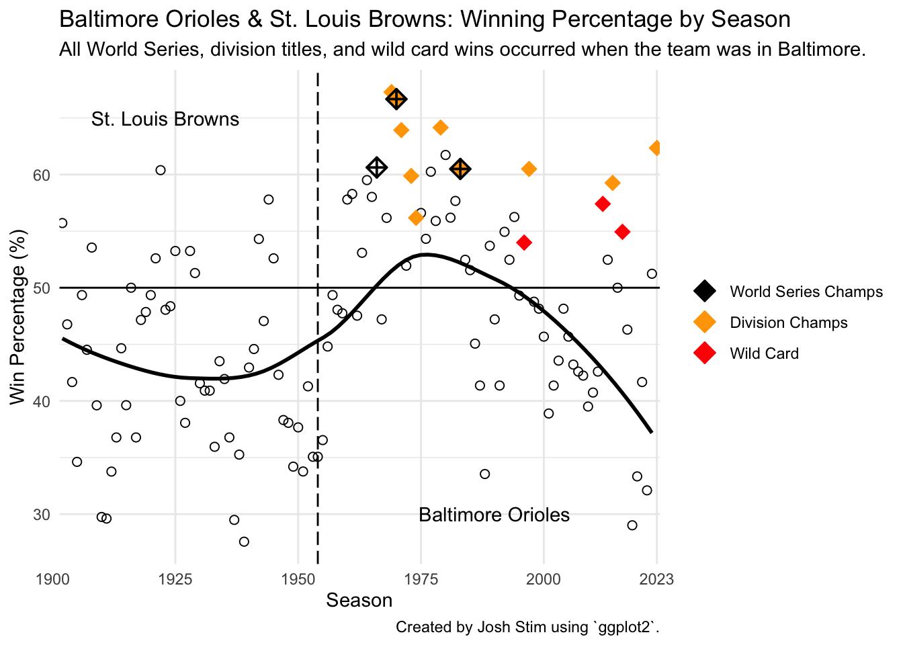

Code
library("tidyverse")
library("readxl")
library("patchwork")
library("knitr")This image of Camden Yards (home of the Baltimore Orioles) was obtained from (“Virtual Backgrounds,” n.d.).
Based in Camden Yards in Baltimore, MD, the Orioles are beloved by many Baltimoreans. However, they were not always located in Baltimore! In fact, the franchise began in Milwaukee, Wisconsin in 1901, where they were called the “Milwaukee Brewers” (not to be confused with the Milwaukee Brewers that exist today). In 1902, the franchise moved to St. Louis, where they stayed for 53 years until the end of 1953. At the time, they were one of two teams in St. Louis; the other team was the Cardinals (yes, St. Louis Cardinals). Finally, in 1954, the team moved to Baltimore where they came to be known as the Baltimore Orioles.
As is common in most sports, baseball team performance varies over time. The nature of this variation depends on factors such as the quality of the athletes, changes to the rule book, and team strategies, among other things. Here, we examine how overall team performance (measured by win percentage) and batting performance of the Baltimore Orioles has changed since 1902.
Because the frachise was in Milwaukee for only 1 year (1901), I decided to exclude this season from my analysis. In the following analysis, we look at 53 seasons of the St. Louis Browns (1902 - 1953), and 70 seasons of the Baltimore Orioles (1954 - 2023).
In particular, I seek to answer the following question about the Orioles:
From 1902 to 2023,
How does winning percentage change over time?
How does the frequency of different types of hits change over time?
How does overall batting performance change over time?
How does frequency of non-hit batting outcomes change over time?
This analysis is intended for anyone who is interested in baseball history. Even if you are not an Orioles fan, this analysis may still be of interest, since a number of the trends observed here likely reflect league-wide rule changes and gameplay tendencies.
The data for this analysis were obtained from (“Stathead Team Batting,” n.d.), which provides endless sports data on team and player performances at the game and season levels. As part of my analysis, I wanted to isolate seasons that corresponded to winning the world-series, the division, or the wildcard. I was able to determine which seasons these were by referencing (“Baltimore Orioles” 2023).
I decided to create my own data dictionary. You may find that at the end of this article.
For this analysis, I will use functions from the tidyverse, readxl, patchwork, and knitr libraries in R.
The data were downloaded from (“Stathead Team Batting,” n.d.) and will be imported into R using the read_excel function.
Rows: 123
Columns: 31
$ Rk <dbl> 1, 2, 3, 4, 5, 6, 7, 8, 9, 10, 11, 12, 13, 14, 15, 16, 17…
$ Season <dbl> 2023, 2022, 2021, 2020, 2019, 2018, 2017, 2016, 2015, 201…
$ Team <chr> "BAL", "BAL", "BAL", "BAL", "BAL", "BAL", "BAL", "BAL", "…
$ Lg <chr> "AL", "AL", "AL", "AL", "AL", "AL", "AL", "AL", "AL", "AL…
$ W <dbl> 101, 83, 52, 25, 54, 47, 75, 89, 81, 96, 85, 93, 69, 66, …
$ GP <dbl> 162, 162, 162, 60, 162, 162, 162, 162, 162, 162, 162, 162…
$ L <dbl> 61, 79, 110, 35, 108, 115, 87, 73, 81, 66, 77, 69, 93, 96…
$ `Bat#` <dbl> 31, 32, 44, 21, 45, 45, 41, 40, 43, 39, 41, 39, 37, 36, 3…
$ PA <dbl> 6123, 6049, 5983, 2242, 6189, 6034, 6140, 6089, 6007, 613…
$ AB <dbl> 5495, 5429, 5420, 2026, 5596, 5507, 5650, 5524, 5485, 559…
$ R <dbl> 807, 674, 659, 274, 729, 622, 743, 744, 713, 705, 745, 71…
$ H <dbl> 1399, 1281, 1296, 523, 1379, 1317, 1469, 1413, 1370, 1434…
$ single <dbl> 879, 810, 820, 337, 889, 872, 956, 889, 887, 943, 936, 87…
$ double <dbl> 309, 275, 266, 102, 252, 242, 269, 265, 246, 264, 298, 27…
$ triple <dbl> 28, 25, 15, 7, 25, 15, 12, 6, 20, 16, 14, 16, 13, 21, 19,…
$ HR <dbl> 183, 171, 195, 77, 213, 188, 232, 253, 217, 211, 212, 214…
$ RBI <dbl> 780, 639, 632, 264, 698, 593, 713, 710, 686, 681, 719, 67…
$ SB <dbl> 114, 95, 54, 19, 84, 81, 32, 19, 44, 44, 79, 58, 81, 76, …
$ CS <dbl> 24, 31, 23, 14, 30, 22, 13, 13, 25, 20, 29, 29, 25, 34, 3…
$ BB <dbl> 512, 476, 451, 164, 462, 422, 392, 468, 418, 401, 416, 48…
$ SO <dbl> 1370, 1390, 1454, 514, 1435, 1412, 1412, 1324, 1331, 1285…
$ OBP <dbl> 0.321, 0.305, 0.304, 0.321, 0.310, 0.298, 0.312, 0.317, 0…
$ GIDP <dbl> 114, 95, 105, 32, 111, 132, 138, 119, 127, 112, 105, 152,…
$ HBP <dbl> 45, 83, 65, 27, 71, 57, 50, 44, 51, 62, 36, 50, 52, 54, 3…
$ SH <dbl> 21, 12, 14, 15, 22, 13, 10, 17, 20, 35, 27, 38, 24, 31, 1…
$ SF <dbl> 47, 43, 31, 10, 37, 35, 37, 36, 32, 36, 45, 30, 43, 45, 4…
$ IBB <dbl> 14, 10, 12, 5, 8, 19, 12, 19, 23, 29, 36, 24, 24, 32, 25,…
$ LOB <dbl> 1041, 1095, 1046, 410, 1063, 1027, 1041, 1065, 990, 1088,…
$ Div_Champ <dbl> 1, 0, 0, 0, 0, 0, 0, 0, 0, 1, 0, 0, 0, 0, 0, 0, 0, 0, 0, …
$ Wild_Card <dbl> 0, 0, 0, 0, 0, 0, 0, 1, 0, 0, 0, 1, 0, 0, 0, 0, 0, 0, 0, …
$ World_Series <dbl> 0, 0, 0, 0, 0, 0, 0, 0, 0, 0, 0, 0, 0, 0, 0, 0, 0, 0, 0, …The raw data does not include classical baseball statistics such as batting average, win percentage, and slugging. It also only includes the raw counts (not relative frequency measures) for singles, double, triples, and home runs. Luckily, I am able to compute these metrics quite easily in R. I will briefly summarize each metric I plan to compute.
Win_percent \(= 100 \times (\frac{W}{GP})\): The percent of games played that resulted in a win.
single.freq \(= 1000 \times (\frac{S}{PA})\): The number of singles per 1000 plate appearance
double.freq \(= 1000 \times (\frac{D}{PA})\): The number of doubles per 1000 plate appearance
triple.freq \(= 1000 \times (\frac{Tr}{PA})\): The number of triples per 1000 plate appearance
HR.freq \(= 1000 \times (\frac{HR}{PA})\): The number of homeruns per 1000 plate appearance
SO.freq \(= 1000 \times (\frac{SO}{PA})\): The number of strike outs per 1000 plate appearances
BB.freq \(= 1000 \times (\frac{BB}{PA})\): The number of base-on-balls (walks) per 1000 plate appearances
IBB.freq \(= 1000 \times (\frac{IBB}{PA})\): The number of intentional base-on-balls (intentional walks) per 1000 plate appearances
HBP.freq \(= 1000 \times (\frac{HBP}{PA})\): The number of hit-by-pitch occurrences per 1000 plate appearances
BA \(= \frac{nH}{AB}\): The proportion of at bats that resulted in a hit
SLG \(= \frac{nS + 2\cdot nD + 3\cdot nT + 4\cdot nHR}{AB}\): The average number of bases obtained through a hit for each at bat.
OPS \(= OBP + SLG\): On base percentage plus slugging.
anyAward \(= n\text{WorldSeries} + n\text{DivChamps} + n\text{WildCard}\): TRUE if the team won a world series, division championship, or clinched the wild card.
bmore.data.mod <- bmore.data.raw %>%
mutate(
Win_percent = 100 * (W / GP), # win percentage
single.freq = 1000 * (single / PA), # singles per 1000 at bats
double.freq = 1000 * (double / PA), # doubles per 1000 at bats
triple.freq = 1000 * (triple / PA), # triples per 1000 at bats
HR.freq = 1000 * (HR / PA), # home runs per 1000 at bats
SO.freq = 1000 * (SO / PA),
BB.freq = 1000 * (BB / PA),
IBB.freq = 1000 * (IBB / PA),
HBP.freq = 1000 * (HBP / PA),
BA = H / AB, # batting average
SLG = (single + 2*double + 3*triple + 4*HR) / AB, # slugging
OPS = OBP + SLG, # on-base-percentage plus slugging
anyAward = as.logical(World_Series + Div_Champ + Wild_Card)) # did the season culminate in world series, division champ, or wild card?
bmore.data.mod <- bmore.data.mod[-123,] # remove data from 1901 (Team == MLA)I decided to use plate appearance (PA) to calculate the different hit and non-hit frequencies over the years. Normally, at-bats (AB) are used in the denominator when calculating frequency of different hit types. However, because BB, IBB, and HBP are not possible outcomes for an AB, and I wanted to have consistent measures for hit and non-hit frequencies, I decided to use PA instead of AB in the denominators.
The only exception to this is when I computed batting average (BA) and slugging (SLG). These are classical baseball statistics commonly referenced by baseball experts and fans alike. Therefore, I did not want to deviate from these standard formulas by using PA instead of AB.
Were the Orioles ever “good”? The answer to this depends on how you define “good”. Suppose that “good” just means a winning record (i.e., Win_percent > 50). If this is the case, then the Orioles were a “good” team for 46 of the 122 seasons examined here. That is, in \(38\%\) of their seasons, the Orioles had a winning record (or they had a losing record for \(62\%\) of seasons). While this certainly isn’t that impressive over the long run, the Orioles were actually very good during mid-60’s to mid 80’s (see (O’Nair 2023) for a list of the best Orioles teams ever). In fact, they had a winning record for 20 of their 21 seasons (\(95\%\)) between 1965 and 1985 and won 3 world series and 7 division championships. This was the golden age for the Baltimore Orioles, and was in no small part due to their excellent roster of future hall-of-famers. The Orioles have been less consistent in the 2000’s; aside from a few winning seasons, such as the recent 2023 season which culminated in \(>\) 100 wins (one of only 6 occurrences in franchise history; see table 1) and a division title, they have only obtained winning record for 6 out of the 24 seasons (\(25\%\)) between 2000 and 2023.
| Season | Team | W | L | Div_Champ | World_Series |
|---|---|---|---|---|---|
| 2023 | BAL | 101 | 61 | 1 | 0 |
| 1980 | BAL | 100 | 62 | 0 | 0 |
| 1979 | BAL | 102 | 57 | 1 | 0 |
| 1971 | BAL | 101 | 57 | 1 | 0 |
| 1970 | BAL | 108 | 54 | 1 | 1 |
| 1969 | BAL | 109 | 53 | 1 | 0 |
Table 1. Seasons with at least 100 wins.
bmore.data.noAwards <- filter(bmore.data.mod, anyAward == FALSE)
bmore.data.World_Series <- filter(bmore.data.mod, World_Series == 1)
bmore.data.Div_Champ <- filter(bmore.data.mod, Div_Champ == 1)
bmore.data.Wild_Card <- filter(bmore.data.mod, Wild_Card == 1)
bmore.data.noAwards %>%
ggplot(aes(x = Season, y = Win_percent, color = Team)) +
geom_point(size = 2, color = "black", shape = 1) +
geom_point(data = bmore.data.Wild_Card, aes(x = Season, y = Win_percent, color = "Wild Card"), size = 4, shape = "diamond") +
geom_point(data = bmore.data.Div_Champ, aes(x = Season, y = Win_percent, color = "Division Champs"), size = 4, shape = "diamond") +
geom_point(data = bmore.data.World_Series, aes(x = Season, y = Win_percent, color = "World Series Champs"), size = 3, shape = 9, stroke = 1) +
geom_hline(yintercept = 50) +
geom_vline(xintercept = 1954, linetype = "longdash") +
annotate(geom = "text", x = 1923, y = 65, label = "St. Louis Browns") +
annotate(geom = "text", x = 1990, y = 30, label = "Baltimore Orioles") +
stat_smooth(aes(group = 1), method = "loess", formula = y ~ x, se = FALSE, color = "black") +
scale_color_manual(values = c("black", "orange", "red"), breaks=c('World Series Champs', 'Division Champs', 'Wild Card')) +
labs(title = "Baltimore Orioles & St. Louis Browns: Winning Percentage by Season",
subtitle = "All World Series titles, division titles, and wild card wins occurred when the team was in Baltimore.",
caption = "Created by Josh Stim using `ggplot2`.",
y = "Win Percentage (%)") +
theme_minimal() +
theme(legend.title = element_blank())
As we can see below, different types of hits were more popular (or more feasible) during specific time periods of the team’s history. It is clear that the single has always been the most common type of hit, although there has been a somewhat consistent decrease over time. The frequency of double has fluctuated quite a bit over time. In my opinion, the most interesting pattern here is the decline of the triple and rise of the home run. From 1900 - 1920, the triple was at its peak frequency of around 11 per 1000 plate appearance. Since then, however, it has been on the consistent decline to where it sits today at around 3 per 1000 plate appearance. One sensible explanation for this decline is that players are now hitting home runs instead of triples. Indeed, home runs have become much, much more prevalent compared to the early days, rising from around 3 per 1000 at bats from 1900 - 1920 to around 34 per 1000 at bats in the present day. This striking increase in frequency is a known phenomenon and is seen throughout the entire league (Baseball Almanac, n.d.). Experts believe this can be partly explained by faster pitching (Sheinin 2019) (which means greater exit velocity when the ball is hit).
bmore.data.mod %>%
select(Season, Team, single.freq, double.freq, triple.freq, HR.freq) %>%
pivot_longer(cols = c(single.freq, double.freq, triple.freq, HR.freq),
names_to = "hit_type",
values_to = "freq") %>%
ggplot(aes(x=Season, y=freq, color = Team)) +
geom_point() +
geom_vline(xintercept = 1954, linetype = "longdash") +
facet_wrap(~hit_type, scales = "free") +
geom_smooth(color = "black") +
labs(title = "Hit Frequency by Season",
subtitle = "Home runs are exploding in frequency while triples are on the decline.",
caption = "Created by Josh Stim using `ggplot2`.",
y = "Relative Frequency (hits per 1000 PA)") +
theme_minimal()Do more home runs mean greater team batting averages? Surprisingly, no. While batters today are certainly hitting the ball further than they were in the early days, they are also striking out more. Perhaps this is due to a greater swing tendency in batters and better pitching from pitchers; I will return to this later. Does consistent batting averages mean that batters have not gotten better at batting? Absolutely not. As we can see, slugging has actually risen quite a bit since early days (see tables 2 & 3 for top five best and worst seasons for SLG). This makes sense because slugging, unlike batting average, places a greater weight on hits that result in more bases, and so the increase in slugging is due, in part, to the exploding home run rate. Similar to slugging, OPS has increased through the years. Again, this makes sense because OPS includes slugging in its calculation. The other part of OPS is on bases percentage (OBP), which reflects how often players make hits, gets walked, hit by a pitch, etc. The trajectory in the frequency of the latter two outcomes over the years are covered in the next section.
The last thing I want to point out here is the batting performance of the St.Louis Browns in the 1920’s. As we can see, this was an extremely productive time for the Brown’s batting-wise, with the highest BA, OBP, and OPS in franchise history occurring in the 1922 season. This batting productivity was certainly due not to home runs, but rather to a higher frequency of singles (195 per 1000 PA) and triples (15 per 1000 PA) and a similar frequency of doubles (48 per 1000 PA) compared to today’s standards (144, 5, and 51, in the 2023 season, respectively).
| Season | Team | SLG |
|---|---|---|
| 1996 | BAL | 0.4719634 |
| 1922 | SLB | 0.4530876 |
| 1999 | BAL | 0.4474011 |
| 1998 | BAL | 0.4469003 |
| 2016 | BAL | 0.4433382 |
Table 2. Five seasons with highest SLG.
| Season | Team | SLG |
|---|---|---|
| 1910 | SLB | 0.2741777 |
| 1909 | SLB | 0.2794118 |
| 1905 | SLB | 0.2890085 |
| 1904 | SLB | 0.2938953 |
| 1916 | SLB | 0.3074685 |
Table 3. Five seasons with lowest SLG.
p.BA <- bmore.data.mod %>%
ggplot(aes(x = Season, y = BA, color = Team)) +
geom_vline(xintercept = 1954, linetype = "longdash") +
geom_point() +
geom_smooth(method = 'loess', formula = 'y~x', color = "black") +
theme_minimal() +
theme(legend.position = "none")
p.OBP <- bmore.data.mod %>%
ggplot(aes(x = Season, y = OBP, color = Team)) +
geom_vline(xintercept = 1954, linetype = "longdash") +
geom_point() +
geom_smooth(method = 'loess', formula = 'y~x', color = "black") +
theme_minimal()
p.SLG <- bmore.data.mod %>%
ggplot(aes(x = Season, y = SLG, color = Team)) +
geom_vline(xintercept = 1954, linetype = "longdash") +
geom_point() +
geom_smooth(method = 'loess', formula = 'y~x', color = "black") +
theme_minimal() +
theme(legend.position = "none")
p.OPS <- bmore.data.mod %>%
ggplot(aes(x = Season, y = OPS, color = Team)) +
geom_vline(xintercept = 1954, linetype = "longdash") +
geom_point() +
geom_smooth(method = 'loess', formula = 'y~x', color = "black") +
theme_minimal()
p.BA + p.OBP + p.SLG + p.OPS + plot_layout(ncol = 2, nrow = 2) +
plot_annotation(title = "Overall Batting Performance by Season",
subtitle = "Observed increases in SLG and OPS over time, but not BA or OBP.",
caption = "Created by Josh Stim using `ggplot2`.")So far, we’ve looked mostly at hits, or measures associated with hits. But what about other outcomes that may occur at the plate? Here, we look at how the number of strikeouts (SO), walks (BB), intentional walks (IBB), and hit by pitch occurrences (HBP) has fluctuated over time. Perhaps most striking is the dramatic increase in SO’s over the years, which is likely due to stronger pitching in the present day. It’s also possible that there are more SO’s because batters are swinging at more pitches. While I do not analyze swing rate here, it might be something worth looking into for a future analysis.
Another notable observation is the pattern of intentional walks over time, which unsurprisingly reached a striking peak during the teams “best years” from mid 60’s to the mid-80’s. I say this is unsurprising because usually teams with really good batters rack up more intentional walks, at least in the present day. It is peculiar, however, that IBB was on the steady rise from 1924 until around 1974, and then was on the steady decline until the present day. This makes me think that IBB cannot be explained solely by team hitting performance, but could be influenced by league-wide gameplay tendencies. I would be curious to see if other teams follow a similar historical pattern as observed here.
Finally, the pattern of HBP occurrences over time is quite interesting as well. Notably, HBP rate decreased sharply from about 8 per 1000 PA in the 1910’s to nearly 3 per 1000 PA in the mid-to-late 1940’s and then steadily rose again to around 10 per 1000 PA in the present day. The explanation for this pattern escapes me, but I would be very interested to hear hypothesis and suggestions for follow up analyses.
bmore.data.mod %>%
select(Season, Team, SO.freq, BB.freq, IBB.freq, HBP.freq) %>%
pivot_longer(cols = c(SO.freq, BB.freq, IBB.freq, HBP.freq),
names_to = "outcome",
values_to = "freq") %>%
ggplot(aes(x=Season, y=freq, color = Team)) +
geom_point() +
geom_vline(xintercept = 1954, linetype = "longdash") +
facet_wrap(~outcome, scales = "free") +
geom_smooth(color = "black") +
labs(title = "Occurrences of Non-hit Batting Outcomes by Season",
subtitle = "SO's and HBP are gaining in prevalence over time. IBB's peaked during team's 'Golden Age'.",
caption = "Created by Josh Stim using `ggplot2`.",
y = "Relative Frequency (Outcomes per 1000 PA)") +
theme_minimal()Rk: Used for ordering the season. Rk = 1 is the most recent season.
Season: The season year
Team: The baseball team. BAL for Baltimore, SLB for St. Louis, MLA for Milwaukee
Lg: The leauge the team played during a given season. AL means American League.
W, L, GP: Number of wins, losses, and games played for a given season, respectively.
Bat#: Number of batters the team had in rotation during a given season.
PA: Number of plate appearances in a season.
AB: Number of at-bats in a season.
R: Number of runs scored in a season.
H: Number of hits in a season.
single, double, triple, HR: Number of singles, double, triples, and homeruns in a season, respectively.
RBI: Number of “runs batted in” during a given season.
SB: Number of stolen bases in a season.
CS: Number of times a player was caught stealing during a season.
BB: Number of batter “base-on-balls” (i.e., walks) in a season.
SO: Number of batter strike outs in a season.
OBP: On base percentage (i.e., percent of plate appearances where batter gets on base) in a season.
GIDP: Number of ground into double play occurrences in a season.
HBP: Number of hit by pitch occurrences in a season.
SH, SF: Number of sacrifice hits and sacrifice flys, respectively.
IBB: Number of intentional “base-on-balls” (i.e., intentional walks) in a season.
LOB: Number of runners left on base in a season.
World_Series, Div_Champ, Wild_Card: set to 1 if team won the World Series, Division title, or Wild card, respectively. Otherwise set to 0.
For this analysis, I used the following packages and functions in R:
readxl: read_excel()
dplyr: glimpse(), mutate(), filter(), select(), pivot_longer(), arrange(), head()
ggplot2: ggplot(), geom_point(), geom_smooth(), geom_hline(), geom_vline(), theme_minimal(), theme(), stat_smooth(), annotate(), scale_color_manual()
knitr: kable()